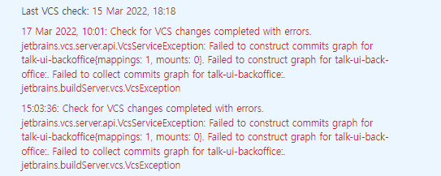

jetbrains.vcs.server.api.VcsServiceException Failed to construct commits graph for...
2022, Mar 24
upsource
upsource 동기화 오류
problem
건물 정전되었을 때, upsource도 같이 고장나버렸다. 정전되면서 정리되지 못한 commit log파일들도 지우고, 어찌어찌 다시 살려냈는데
hub의 프로젝트 목록에 들어가보면 이렇게 오류가 나있고 정전 이후에 커밋된 데이터를 가져오지 못했다.

[error log]
Caused by: jetbrains.vcs.server.api.VcsServiceException: Failed to construct commits graph for talk-ui-backoffice{mappings: 1, mounts: 0}. Failed to const
ruct graph for talk-ui-backoffice:. Failed to collect commits graph for talk-ui-backoffice:. jetbrains.buildServer.vcs.VcsException
[2022-03-24 15:16:37,356] [Upsource Frontend Error] at jetbrains.vcs.server.core.impl.graph.global.CompositeGraphFactory.fetchGraph(CompositeGraphFactory.java:103)
[2022-03-24 15:16:37,356] [Upsource Frontend Error] at jetbrains.vcs.server.core.impl.graph.GraphServiceImpl.fetchGraph(GraphServiceImpl.java:68)
[2022-03-24 15:16:37,356] [Upsource Frontend Error] at jetbrains.vcs.server.core.impl.graph.FetchServiceImpl.fetch(FetchServiceImpl.java:22)
[2022-03-24 15:16:37,356] [Upsource Frontend Error] at com.jetbrains.upsource.backend.cli.vcs.service.VcsServiceClient.processNewRevisions(VcsServiceClient.java:72)
[2022-03-24 15:16:37,357] [Upsource Frontend Error] ... 19 more
[2022-03-24 15:16:37,357] [Upsource Frontend Error] Caused by: jetbrains.vcs.server.api.VcsServiceException: Failed to construct graph for talk-ui-backoffice:. Failed to collect commits graph for talk-ui-ba
ckoffice:. jetbrains.buildServer.vcs.VcsException
[2022-03-24 15:16:37,357] [Upsource Frontend Error] at jetbrains.vcs.server.core.impl.graph.global.MappingCommitsGraphFutures$2.graph(MappingCommitsGraphFutures.java:41)
[2022-03-24 15:16:37,357] [Upsource Frontend Error] at jetbrains.vcs.server.core.impl.graph.global.CompositeGraphBuilder.includeMappings(CompositeGraphBuilder.java:128)
[2022-03-24 15:16:37,357] [Upsource Frontend Error] at jetbrains.vcs.server.core.impl.graph.global.CompositeGraphBuilder.loadGraphs(CompositeGraphBuilder.java:96)
[2022-03-24 15:16:37,357] [Upsource Frontend Error] at jetbrains.vcs.server.core.impl.graph.global.CompositeGraphBuilder.fetchAllGraphs(CompositeGraphBuilder.java:62)
[2022-03-24 15:16:37,357] [Upsource Frontend Error] at jetbrains.vcs.server.core.impl.graph.global.CompositeGraphFactory.fetchGraph(CompositeGraphFactory.java:99)
[2022-03-24 15:16:37,357] [Upsource Frontend Error] ... 22 more
[2022-03-24 15:16:37,357] [Upsource Frontend Error] Caused by: jetbrains.vcs.server.api.VcsServiceException: Failed to construct graph for talk-ui-backoffice:. Failed to collect commits graph for talk-ui-ba
ckoffice:. jetbrains.buildServer.vcs.VcsException
[2022-03-24 15:16:37,357] [Upsource Frontend Error] at jetbrains.vcs.server.core.impl.graph.global.MappingCommitsGraphFutures.error(MappingCommitsGraphFutures.java:57)
[2022-03-24 15:16:37,357] [Upsource Frontend Error] at jetbrains.vcs.server.core.impl.graph.global.MappingCommitsGraphFutures.errorGraph(MappingCommitsGraphFutures.java:31)
[2022-03-24 15:16:37,358] [Upsource Frontend Error] at jetbrains.vcs.server.core.impl.graph.global.CompositeGraphBuilder.lambda$loadGraphs$0(CompositeGraphBuilder.java:117)
[2022-03-24 15:16:37,358] [Upsource Frontend Error] at jetbrains.vcs.server.core.impl.threading.TrueParallelExecutionImpl$2.call(TrueParallelExecutionImpl.java:86)
[2022-03-24 15:16:37,358] [Upsource Frontend Error] at __. project_talk-ui-backoffice .__.call(JavaGeneratorTemplate.java:39)
[2022-03-24 15:16:37,358] [Upsource Frontend Error] at com.jetbrains.upsource.common.NamedFrameUtil.withProject(NamedFrameUtil.java:27)
[2022-03-24 15:16:37,358] [Upsource Frontend Error] at com.jetbrains.upsource.backend.cli.vcs.service.VcsServiceConnections$2.lambda$wrapMappingTask$0(VcsServiceConnections.java:73)
[2022-03-24 15:16:37,358] [Upsource Frontend Error] at java.util.concurrent.FutureTask.run(FutureTask.java:266)
[2022-03-24 15:16:37,358] [Upsource Frontend Error] at java.util.concurrent.ThreadPoolExecutor.runWorker(ThreadPoolExecutor.java:1149)
[2022-03-24 15:16:37,358] [Upsource Frontend Error] at java.util.concurrent.ThreadPoolExecutor$Worker.run(ThreadPoolExecutor.java:624)
[2022-03-24 15:16:37,358] [Upsource Frontend Error] at jetbrains.vcs.server.core.impl.threading.TrueParallelExecutionImpl$1$1.run(TrueParallelExecutionImpl.java:51)
[2022-03-24 15:16:37,358] [Upsource Frontend Error] ... 1 more
[2022-03-24 15:16:37,358] [Upsource Frontend Error] Caused by: jetbrains.vcs.server.api.VcsServiceException: Failed to collect commits graph for talk-ui-backoffice:. jetbrains.buildServer.vcs.VcsException
[2022-03-24 15:16:37,358] [Upsource Frontend Error] at jetbrains.vcs.server.core.impl.graph.worker.VcsGraphSource.fetchCommits(VcsGraphSource.java:37)
[2022-03-24 15:16:37,358] [Upsource Frontend Error] at jetbrains.vcs.server.core.impl.graph.mapping.MappingCommitsGraphFactory.buildGraph(MappingCommitsGraphFactory.java:70)
[2022-03-24 15:16:37,359] [Upsource Frontend Error] at jetbrains.vcs.server.core.impl.graph.incremental.CachingCommitGraphFactory.buildGraph(CachingCommitGraphFactory.java:55)
[2022-03-24 15:16:37,359] [Upsource Frontend Error] at jetbrains.vcs.server.core.impl.graph.global.CompositeGraphFactory$1.buildGraph(CompositeGraphFactory.java:85)
[2022-03-24 15:16:37,359] [Upsource Frontend Error] at jetbrains.vcs.server.core.impl.graph.global.CompositeGraphBuilder.lambda$loadGraphs$0(CompositeGraphBuilder.java:110)
[2022-03-24 15:16:37,359] [Upsource Frontend Error] ... 9 more
[2022-03-24 15:16:37,359] [Upsource Frontend Error] Caused by: jetbrains.buildServer.vcs.VcsException: jetbrains.buildServer.vcs.VcsException
[2022-03-24 15:16:37,359] [Upsource Frontend Error] at jetbrains.buildServer.buildTriggers.vcs.git.commitInfo.GitCommitsInfoBuilder.lambda$collectCommits$0(GitCommitsInfoBuilder.java:66)
[2022-03-24 15:16:37,359] [Upsource Frontend Error] at jetbrains.buildServer.buildTriggers.vcs.git.RepositoryManagerImpl.runWithDisabledRemove(RepositoryManagerImpl.java:268)
[2022-03-24 15:16:37,359] [Upsource Frontend Error] at jetbrains.buildServer.buildTriggers.vcs.git.commitInfo.GitCommitsInfoBuilder.collectCommits(GitCommitsInfoBuilder.java:59)
[2022-03-24 15:16:37,359] [Upsource Frontend Error] at jetbrains.vcs.api.services.collectChanges.CommitsInfoServiceProvider$1.collectCommits(CommitsInfoServiceProvider.java:33)
[2022-03-24 15:16:37,359] [Upsource Frontend Error] at jetbrains.vcs.server.core.impl.graph.worker.VcsGraphSource.fetchCommits(VcsGraphSource.java:33)
[2022-03-24 15:16:37,359] [Upsource Frontend Error] ... 13 more
[2022-03-24 15:16:37,359] [Upsource Frontend Error] Caused by: jetbrains.buildServer.vcs.VcsException
[2022-03-24 15:16:37,359] [Upsource Frontend Error] at jetbrains.buildServer.buildTriggers.vcs.git.GitCollectChangesPolicy.fetchAllRefs(GitCollectChangesPolicy.java:143)
[2022-03-24 15:16:37,359] [Upsource Frontend Error] at jetbrains.buildServer.buildTriggers.vcs.git.GitFetchService.fetchRepositoryImpl(GitFetchService.java:59)
[2022-03-24 15:16:37,359] [Upsource Frontend Error] at jetbrains.buildServer.buildTriggers.vcs.git.GitFetchService.getOrCreateRepositoryState(GitFetchService.java:72)
[2022-03-24 15:16:37,359] [Upsource Frontend Error] at jetbrains.buildServer.buildTriggers.vcs.git.commitInfo.GitCommitsInfoBuilder.lambda$collectCommits$0(GitCommitsInfoBuilder.java:62)
[2022-03-24 15:16:37,359] [Upsource Frontend Error] ... 17 more
[2022-03-24 15:16:37,360] [Upsource Frontend Error] Caused by: java.lang.NegativeArraySizeException
[2022-03-24 15:16:37,360] [Upsource Frontend Error] at org.eclipse.jgit.internal.storage.file.PackIndexV1.<init>(PackIndexV1.java:96)
[2022-03-24 15:16:37,360] [Upsource Frontend Error] at org.eclipse.jgit.internal.storage.file.PackIndex$PackIndexFactory.read(PackIndex.java:436)
[2022-03-24 15:16:37,360] [Upsource Frontend Error] at org.eclipse.jgit.internal.storage.file.PackIndex$PackIndexFactory.open(PackIndex.java:391)
[2022-03-24 15:16:37,360] [Upsource Frontend Error] at org.eclipse.jgit.internal.storage.file.PackFile.idx(PackFile.java:170)
[2022-03-24 15:16:37,360] [Upsource Frontend Error] at org.eclipse.jgit.internal.storage.file.PackFile.get(PackFile.java:258)
[2022-03-24 15:16:37,360] [Upsource Frontend Error] at org.eclipse.jgit.internal.storage.file.ObjectDirectory.openPackedObject(ObjectDirectory.java:417)
[2022-03-24 15:16:37,360] [Upsource Frontend Error] at org.eclipse.jgit.internal.storage.file.ObjectDirectory.openPackedFromSelfOrAlternate(ObjectDirectory.java:386)
[2022-03-24 15:16:37,360] [Upsource Frontend Error] at org.eclipse.jgit.internal.storage.file.ObjectDirectory.openObject(ObjectDirectory.java:378)
[2022-03-24 15:16:37,360] [Upsource Frontend Error] at org.eclipse.jgit.internal.storage.file.WindowCursor.open(WindowCursor.java:145)
[2022-03-24 15:16:37,360] [Upsource Frontend Error] at org.eclipse.jgit.lib.ObjectReader.open(ObjectReader.java:229)
[2022-03-24 15:16:37,360] [Upsource Frontend Error] at org.eclipse.jgit.revwalk.RevWalk.parseAny(RevWalk.java:840)
[2022-03-24 15:16:37,360] [Upsource Frontend Error] at org.eclipse.jgit.transport.FetchProcess.askForIsComplete(FetchProcess.java:344)
[2022-03-24 15:16:37,360] [Upsource Frontend Error] at org.eclipse.jgit.transport.FetchProcess.executeImp(FetchProcess.java:159)
[2022-03-24 15:16:37,360] [Upsource Frontend Error] at org.eclipse.jgit.transport.FetchProcess.execute(FetchProcess.java:122)
[2022-03-24 15:16:37,360] [Upsource Frontend Error] at org.eclipse.jgit.transport.Transport.fetch(Transport.java:1138)
[2022-03-24 15:16:37,360] [Upsource Frontend Error] at jetbrains.buildServer.buildTriggers.vcs.git.GitServerUtil.fetch(GitServerUtil.java:522)
[2022-03-24 15:16:37,361] [Upsource Frontend Error] at jetbrains.buildServer.buildTriggers.vcs.git.FetchCommandImpl.fetchInSameProcess(FetchCommandImpl.java:290)
[2022-03-24 15:16:37,361] [Upsource Frontend Error] at jetbrains.buildServer.buildTriggers.vcs.git.FetchCommandImpl.fetch(FetchCommandImpl.java:88)
[2022-03-24 15:16:37,361] [Upsource Frontend Error] at jetbrains.buildServer.buildTriggers.vcs.git.CommitLoaderImpl.fetch(CommitLoaderImpl.java:108)
[2022-03-24 15:16:37,361] [Upsource Frontend Error] at jetbrains.buildServer.buildTriggers.vcs.git.GitCollectChangesPolicy$FetchAllRefs.fetchTrackedRefs(GitCollectChangesPolicy.java:268)
[2022-03-24 15:16:37,361] [Upsource Frontend Error] at jetbrains.buildServer.buildTriggers.vcs.git.GitCollectChangesPolicy.fetchAllRefs(GitCollectChangesPolicy.java:140)
[2022-03-24 15:16:37,361] [Upsource Frontend Error] ... 20 more
... 38 more
[2022-03-24 15:20:37,732] [Upsource Frontend Error] [2022-03-24 15:20:37,727] WARN VcsService-7 k-ui-backoffice h.global.CompositeGraphBuilder - Failed to construct mounted graph for talk-ui-backoffice:. Failed to collect commits graph for talk-ui-backoffice:. jetbrains.buildServer.vcs.VcsException
[2022-03-24 15:20:37,732] [Upsource Frontend Error] jetbrains.vcs.server.api.VcsServiceException: Failed to collect commits graph for talk-ui-backoffice:. jetbrains.buildServer.vcs.VcsException
[2022-03-24 15:20:37,732] [Upsource Frontend Error] at jetbrains.vcs.server.core.impl.graph.worker.VcsGraphSource.fetchCommits(VcsGraphSource.java:37)
[2022-03-24 15:20:37,732] [Upsource Frontend Error] at jetbrains.vcs.server.core.impl.graph.mapping.MappingCommitsGraphFactory.buildGraph(MappingCommitsGraphFactory.java:70)
[2022-03-24 15:20:37,732] [Upsource Frontend Error] at jetbrains.vcs.server.core.impl.graph.incremental.CachingCommitGraphFactory.buildGraph(CachingCommitGraphFactory.java:55)
[2022-03-24 15:20:37,732] [Upsource Frontend Error] at jetbrains.vcs.server.core.impl.graph.global.CompositeGraphFactory$1.buildGraph(CompositeGraphFactory.java:85)
[2022-03-24 15:20:37,732] [Upsource Frontend Error] at jetbrains.vcs.server.core.impl.graph.global.CompositeGraphBuilder.lambda$loadGraphs$0(CompositeGraphBuilder.java:110)
[2022-03-24 15:20:37,733] [Upsource Frontend Error] at jetbrains.vcs.server.core.impl.threading.TrueParallelExecutionImpl$2.call(TrueParallelExecutionImpl.java:86)
[2022-03-24 15:20:37,733] [Upsource Frontend Error] at __. project_talk-ui-backoffice .__.call(JavaGeneratorTemplate.java:39)
[2022-03-24 15:20:37,733] [Upsource Frontend Error] at com.jetbrains.upsource.common.NamedFrameUtil.withProject(NamedFrameUtil.java:27)
[2022-03-24 15:20:37,733] [Upsource Frontend Error] at com.jetbrains.upsource.backend.cli.vcs.service.VcsServiceConnection
solution
원인은 temp하위의 일부 파일이 서비스를 올린 계정과 달라서 접근할 수 없어서 동기화가 안되었던것
/home/upsource/upsource-2020.1.1802/temp/upsource-frontend/vcs-service/caches/plugins/git
- ./upsource.sh stop
그래서 서비스 내리고
- rm -rf * /home/upsource/upsource-2020.1.1802/temp
temp폴더에 있는 파일들 모두 삭제하고
- ./upsource.sh start
다시 재기동하니 solved~